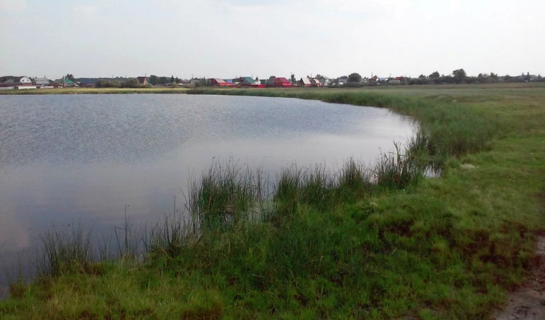
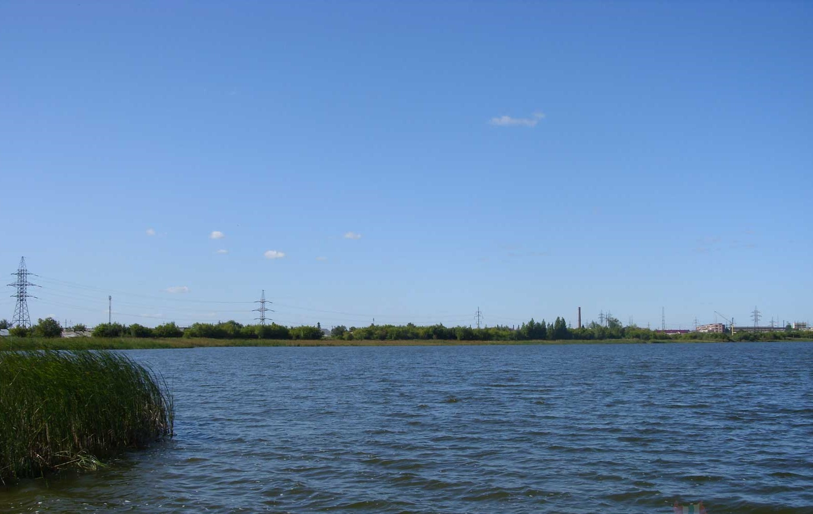

Озёра Омской области


Озеро Чередовое
Расстояние от центра Омска - 12,5 км
Время в пути - 20 минут
Лучшее время для отдыха - круглый год
Особенности - бесплатный вход, разрешено купаться, хорошее место для рыбалки, близкое расположение к городу
Озеро Чередовое — самое большое озеро в Омске, расположенное в южной части Ленинского округа; площадь водной поверхности озера 34 гектаров. Озеро неглубокое — в среднем 3 метра, с развитыми прибрежными мелководьями. Немного севернее своего центра озеро имеет два плёса, один из которых выделяется особо большой глубиной; здесь крутой свал идёт до глубины в 11,7 метров. В отличие от большинства озёр Омска, имеющих плоские котловины, глубины которых постепенно увеличиваются к центру, озеро Чередовое имеет несколько участков с резкими перепадами глубин, вероятно, образованных в результате забора грунта гидроснарядом для строительства насыпей.
Вот что рассказывает предание о возникновении названия озера. В новой Омской крепости, возведение которой началось в 1768 году, находился каторжный острог. Он размещался в Степном бастионе, приблизительно на месте нынешнего медицинского колледжа, что рядом с драматическим театром. Из острога бежал безвинно осужденный узник, по прозвищу Череда. Вскоре после этого в Омске стали находить убитых стражников, служивших в каторжном остроге и отличавшихся особой жестокостью по отношению к узникам.
В правой руке убитых находили пучок болотной травы - череды. Позже возле одного из озер, по форме округлого, простиравшегося на треть версты, на берегу увидели шалаш из ветвей молодых деревьев, а в нем - лежанку, где, скорее всего, и скрывался Череда. С тех пор убитых стражников, служивших в Омском каторжном остроге, больше не находили. Больше никто и никогда не слышал о каторжнике по имени Череда. Возможно, он утонул в озере, а, может, ушел в далекие от Омска места. То озеро омичи стали называть озером Череды, позднее - Чередовым.
Грунт дна песчаный. Берега озера богаты растительностью; тростник образует на них густые заросли в которых гнездятся утки. На южном берегу озера расположен сформировавшийся «народный» подступ к воде, там же высажены несколько групп ивы ломкой (ракиты). Так же там растут рогоз, камыш и в воде обитает рдест. В окрестностях озера растут такие деревья, как берёза, ясень, клён. В озере есть большое разнообразие рыб, недавно там появился ротан.